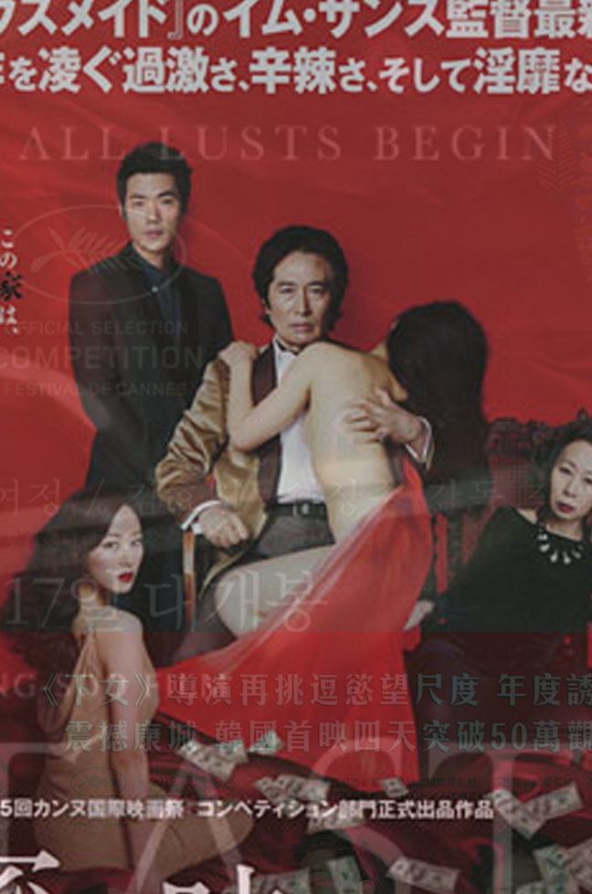

The Taste Of Money
Im Sang-soon
In a luxurious house outside Seoul lives one of the country's richest families: company president Yoon, his wife Baek Geum-ok, their divorced daughter Nami, and son Chul. Yoon is company president but the reins of power are held by his wife Geum-ok, whose aged father was once a powerful businessman, and whom Yoon married for her money and influence. Yoon's private secretary is Joo Young-jak, from humble origins. His current job is making sure a U.S. businessman, Robert Altman, is kept happy with hookers, as part of a major business deal that could prove crucial to the family's fortunes.
When Geum-ok sees Yoon having an affair with their Filipina maid, Eva, on her hidden CCTV, she beds Young-jak in revenge. When Chul is arrested for organizing a slush fund for Altman, Geum-ok decides to further punish her husband for his "mistake" in bringing the family's name into public disrepute, by having Eva killed. At the same time, Nami and Young-jak, start an affair. Yoon commits suicide over Eva's death (and takes the blame for his son's activities). After his funeral, Young-jak quits the family, glad to be rid of their influences. He accompanies Eva's coffin to the Philippines, where he is joined on the plane by Nami.
All of the versions are similar in color scheme. Black and white is used, while red is the most prominent color. The Korean, Chinese, and Japanese versions of the poster have image of the four people that hints us about their relationship by their position or posture. The U.S. version of the poster is using unique yet shocking image that an old lady is lusting a young man. All of the posters are good at portraying the movie's plot, but the Korean version has the best design to attract the audience. It is not too red, but red is still prominent. The typography of the title matches the mood of the movie, and the four actors are well positioned to describe their relationship.